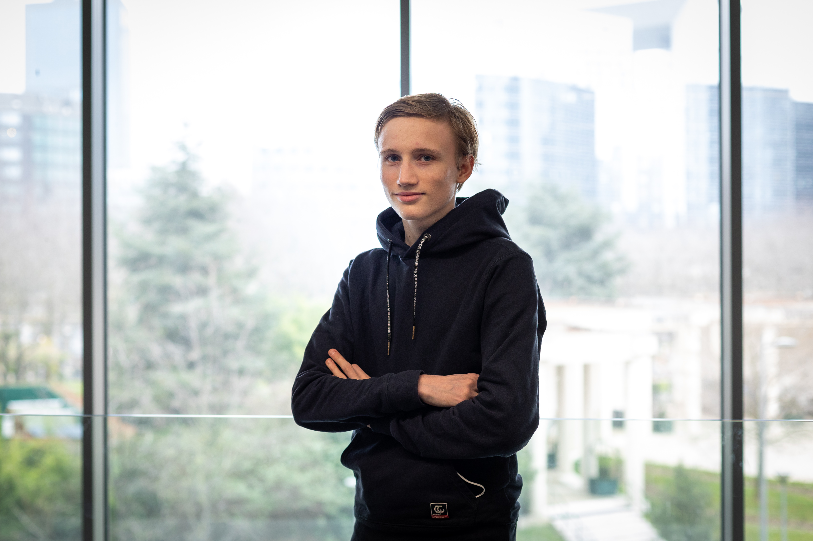

Bonjour,
je m'appelle Martin GASPARD. Je suis étudiant en 2ème année de bachelor Coding & Digital Innovation à L'IIM. L'IIM me permet de me former dans le monde passionnant du digital. J'aime coder et développer des sites web, les jeux vidéo, les sciences, je pratique le judo et occasionnellement le surf. Ce portfolio présente mes projets scolaires et personnels.